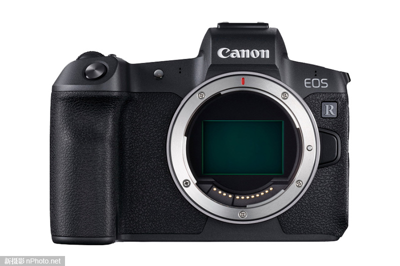
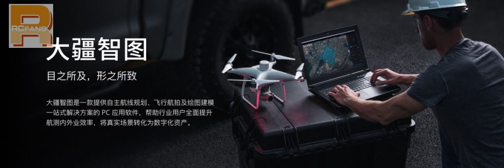
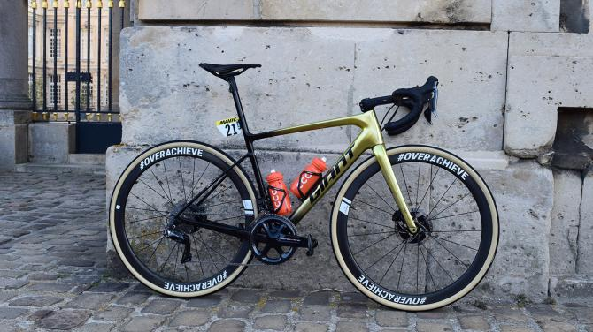
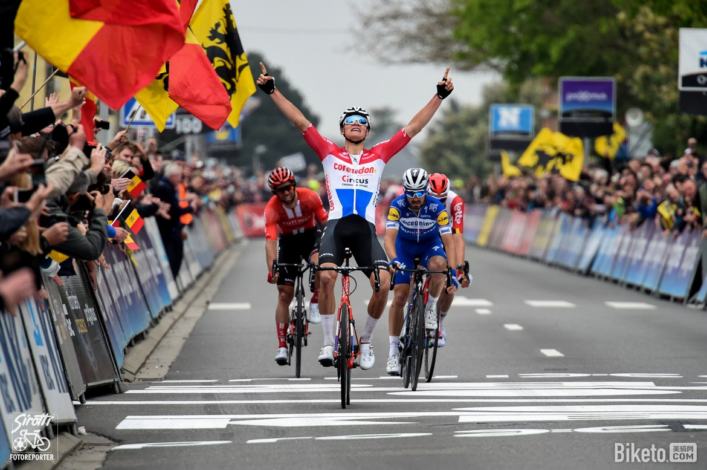

-
 『摄影教程』如何拍出完美的动态汽车摄影作品？
『摄影教程』如何拍出完美的动态汽车摄影作品？汽车是人类工业艺术的结晶，而汽车摄影也是最重要的商业摄影题材之一。尽管大街上到处都是汽车停在那里等着你去拍
-
 佳能公布RF 28mm f/1.8、RF 50mm f/1.8镜头专利
佳能公布RF 28mm f/1.8、RF 50mm f/1.8镜头专利近日，佳能在美国公布了RF 28mm f/1.8、RF 50mm f/1.8两款镜头专利，专利编号为NO.US2019/0113711。从曝光的
-
 蔡司即将发布Ventum 21mm f/2.8航拍用途镜头
蔡司即将发布Ventum 21mm f/2.8航拍用途镜头据Nokishita外媒爆料，蔡司即将发布Ventum 21mm f/2.8航拍用途镜头，该款镜头为索尼E卡
-

佳能7500万像素！你爱不爱？
据知情人士爆料，佳能即将到来的高像素版EOS R相机有望搭载7500像素全画幅CMOS传
-
 我看好索尼！但事实却是佳能、尼康联手统治荷赛
我看好索尼！但事实却是佳能、尼康联手统治荷赛近日，第62届世界新闻摄影比赛（荷赛）公布了2019年该赛事的最终获奖结果
-
 『评测』当之无愧的广角二当家 富士XF 16mm
『评测』当之无愧的广角二当家 富士XF 16mm富士XF 16mm F2.8 R WR是一款设计非常紧凑的广角定焦镜头。它自重155g，镜身长45mm
-
 无人机在稻田上空飞一飞 摸清粮食“家底”
无人机在稻田上空飞一飞 摸清粮食“家底”我们见过无人机用于农业生产，喷洒农药，大大提高工作效率。如今无人机在稻田上空飞一飞、拍一
-
全国职业院校无人机大赛9月举行
中国科学报报导，首届全国职业院校无人机应用创新技能大赛新闻发布会在京召开。全国航空工业职业教育
-
性能独步全球！中国无人机究竟有多棒？
近日，据媒体报道，近年来中国无人机的发展可谓是非常迅速，甚至还抢了美军无人机的风头，那么中国无人机究竟有先进呢？中国的无人
-
 瑞士空中救援组织发明新型救援无人机Rega
瑞士空中救援组织发明新型救援无人机Rega2019年4月17日报道(具体拍摄时间不详)，瑞士空中救援组织Rega已经宣布了一种无人机，它能够独自搜索和发现失踪人员。它具有一系列机载传感器，
-

DJI大疆发布“大疆智图” 推动航测智能化
DJI大疆创新正式推出PC端无人机航测软件——大疆智图。该软件提供自主航线规划、
-
 挑战2019年八天川藏线神兽
挑战2019年八天川藏线神兽“坚持”是2019年八天川藏极限挑战的核心精神。无论是赛道难度，还是选手实力，都较上
-

车手战车 范·阿维马特的定制Giant Defy
CCC 车队的范·阿维马特在上周日的巴黎-鲁贝中，使用了一辆黄金奥运冠军涂装的Gian
-
骑谈 | 你喜欢爬坡吗？
作为菜腿，我们都是从：“老子连1%的坡都不想爬！”的阶段开始，但不管你愿不愿意，路上总有坡等着虐你！随着骑行经验的增加，有的车友慢慢掌握
-

2019布拉班特之箭：范德普尔冲赢老大哥
2019年4月17日，第59届布拉班特之箭结束。范德普尔（Corendon-Circus）在星光熠熠的小集团中脱颖而出，击败阿拉菲利普（德
-
 城市高速座驾：小牛MTBX-03山地车评测
城市高速座驾：小牛MTBX-03山地车评测本次小牛发布的NIU AERO分为 ROAD公路与MTBX山地两大系列，定位为专业运动自行车，主打空
-
 突破极限 坎佩纳尔特的一小时纪录战车
突破极限 坎佩纳尔特的一小时纪录战车4月16日，比利时乐透-速的奥车队的维克多·坎佩纳尔特在墨西哥阿瓜斯卡连特斯双百自行车馆打破一小时纪录。坎佩纳尔特使用了一台特制Ridl
-
 想問一下root的繁體版哪裏有賣？
想問一下root的繁體版哪裏有賣？在眾籌的Q&A裏，有說還要留一小部 分繁體版給港澳台同胞，那要怎麼買？等眾籌完在淘寶買還是怎樣？ 謝謝
-
哪位大佬能介绍一下On Mars？今天ks刚上线，众筹速度惊人啊
哪位大佬能介绍一下On Mars？今天ks刚上线，众筹速度惊人啊
-
萌新问下有哪些适合8人的桌游 除了三国杀 狼人杀
萌新问下有哪些适合8人的桌游 除了三国杀 狼人杀
-
桌游玩家真的是变多了 光ROOT就卖了这么多
桌游玩家真的是变多了 光ROOT就卖了这么多
-
RT，从战锤坑跳过来，试收《旧世邪神》。神，兽3169哈2
萌新问下有哪些适合8人的桌游 除了三国杀 狼人杀
-
新人求教有没有一个人玩的解密游戏啊，就跟忒休斯之船一样的
新人求教有没有一个人玩的解密游戏啊，就跟忒休斯之船一样的